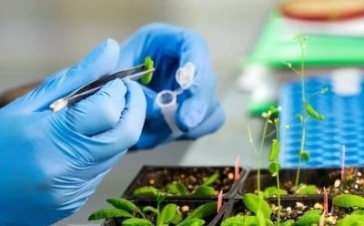

Research Areas & Focus
Experimental biology, plant-derived compounds, and computational science
Experimental biology, plant-derived compounds, and computational science
My flagship MS thesis research contribution — an integrated computational and experimental in vivo investigation.
This MS thesis investigates the antioxidant activity and therapeutic mechanisms of phytochemicals from Houttuynia cordata, a perennial medicinal herb. The study integrates computational molecular docking to screen and evaluate key phytochemical constituents against oxidative stress-associated biological targets, coupled with a comprehensive in vivo experimental battery in the Caenorhabditis elegans model system — including 37 °C thermal stress survival assays across different hours, thrashing assays for locomotion movement and motility analysis, solid-media lifespan curves, and brood size / progeny assays for reproductive safety and toxicity evaluation.

My research primarily focuses on Caenorhabditis elegans (C. elegans) as a model organism to study the effects of plant-derived compounds and synthetic molecules. Through interdisciplinary approaches combining experimental biology with computational methods, I aim to advance our understanding of biological systems and develop innovative therapeutic strategies.
Plant-Derived Extracts and Synthetic Compounds
Laboratory of Applied Bioscience, University of Chittagong
At the Laboratory of Applied Bioscience, my work focuses on utilizing Caenorhabditis elegans (C. elegans) as an in vivo model organism to assess the bioactivity, antioxidant efficacy, and safety profile of plant-derived extracts and synthetic compounds. Our experimental methodologies include 37 °C thermal stress survival assays across different hourly timepoints to quantify thermotolerance, liquid thrashing assays to assess locomotion movement and neuromuscular motility dynamics, solid-media lifespan determination, and brood size / progeny assays to monitor reproductive fecundity and toxicity effects.

Antioxidant Profiling of Plant-Derived Samples
Laboratory of Food Science and Nutraceutical, University of Chittagong
At the Laboratory of Food Science and Nutraceutical, Department of Biochemistry and Molecular Biology, University of Chittagong, our work focuses on analyzing the nutritional composition and antioxidant properties of various plant samples, including seaweeds and dates. We assess proximate composition (carbohydrates, proteins, lipids, ash, moisture), elements (C, H, N, S, P), and minerals (K, Ca, Mg, Fe) to determine their nutritional value.

Drug Discovery, Vaccine Design, and Pan-Cancer Analysis
BioPC - A Bioinformatics Lab of Research and Training
At BioPC - A Bioinformatics Lab of Research and Training, our research utilizes computational and systems biology approaches to accelerate drug discovery, optimize vaccine design.

Investigating plant-derived extracts and natural phytochemicals using C. elegans in vivo phenotypic assays — including 37 °C thermal survival assays across hourly intervals, thrashing locomotion motility tracking, solid-media lifespan curves, and brood size / progeny toxicity screening.
Thesis: In silico and in vivo study of antioxidant activity of phytochemicals from Houttuynia cordata, a perennial herb using molecular docking and Caenorhabditis elegans model (Completed MS Thesis).
Multi-level computational drug discovery evaluating Ocimum basilicum (Sweet Basil) phytochemicals as potent inhibitors of the Marburg virus VP40 matrix protein via molecular docking, binding stability, and ADMET profiling.
Development and psychometric validation of the Academic AI Usage and Dependency Scale (AAIUDS) to quantify generative AI adoption patterns, behavioral trends, and dependency dimensions among academic researchers and university students.
Analyzing the proximate composition, elemental/mineral content, and multi-assay radical scavenging properties of seaweeds and dates in collaboration with the Food Science and Nutraceutical Laboratory.
A curated set of computational and bioinformatics tools powering my research workflows.
Research organizations and laboratories where I actively collaborate and conduct research.